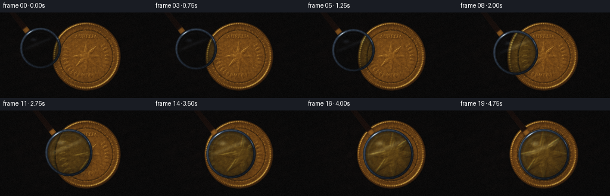
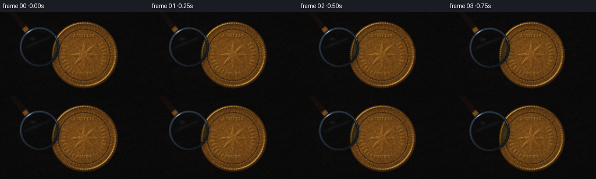

CODING AGENTS AS PIXEL WORLD MODELS
traex/DeepSeek-V4.1-Flash · phygen_069
点击播放 · 原生 RGB 像素
逐轮保存的候选
回放视频、检查图与代码变化。
每份候选均可单独播放。实际图片检查记录在下方工具轨迹中。
候选 01播放与检查图
点击播放 · 原生 RGB 像素


展开代码变化
--- 上一保存版本
+++ 本次保存版本
@@ -0,0 +1,440 @@
+"""Procedural 5-second macro shot of a magnifier approaching an embossed coin."""
+
+from pathlib import Path
+
+import cv2
+import numpy as np
+from PIL import Image, ImageDraw, ImageFont
+from scipy.ndimage import gaussian_filter, shift
+
+import artifact_io
+
+
+ROOT = Path(__file__).resolve().parent
+W, H, FPS, N = 256, 144, 4.0, 20
+SS = 4
+RW, RH = W * SS, H * SS
+
+
+def smoothstep(edge0, edge1, x):
+ t = np.clip((x - edge0) / (edge1 - edge0), 0.0, 1.0)
+ return t * t * (3.0 - 2.0 * t)
+
+
+def normalize(v):
+ return v / np.maximum(np.linalg.norm(v, axis=-1, keepdims=True), 1e-6)
+
+
+def sample_bilinear(image, sx, sy):
+ x0 = np.floor(sx).astype(np.int32)
+ y0 = np.floor(sy).astype(np.int32)
+ x1 = x0 + 1
+ y1 = y0 + 1
+ wx = (sx - x0)[..., None]
+ wy = (sy - y0)[..., None]
+ x0 = np.clip(x0, 0, image.shape[1] - 1)
+ x1 = np.clip(x1, 0, image.shape[1] - 1)
+ y0 = np.clip(y0, 0, image.shape[0] - 1)
+ y1 = np.clip(y1, 0, image.shape[0] - 1)
+ top = image[y0, x0] * (1.0 - wx) + image[y0, x1] * wx
+ bottom = image[y1, x0] * (1.0 - wx) + image[y1, x1] * wx
+ return top * (1.0 - wy) + bottom * wy
+
+
+def rotated_leaf(cx, cy, angle, length, width):
+ pts = np.array(
+ [
+ (0.0, -0.55 * length),
+ (0.42 * width, -0.18 * length),
+ (0.50 * width, 0.14 * length),
+ (0.0, 0.55 * length),
+ (-0.50 * width, 0.14 * length),
+ (-0.42 * width, -0.18 * length),
+ ],
+ dtype=np.float64,
+ )
+ c, s = np.cos(angle), np.sin(angle)
+ rot = np.array([[c, -s], [s, c]])
+ return [tuple(p) for p in pts @ rot.T + np.array([cx, cy])]
+
+
+def build_background(x, y, rng):
+ n_broad = gaussian_filter(rng.normal(size=(RH, RW)).astype(np.float32), 35.0)
+ n_mid = gaussian_filter(rng.normal(size=(RH, RW)).astype(np.float32), 8.0)
+ n_broad = n_broad / max(float(n_broad.std()), 1e-6)
+ n_mid = n_mid / max(float(n_mid.std()), 1e-6)
+
+ warp = 1.4 * np.sin(0.028 * x + 0.5) + 0.9 * np.sin(0.071 * y - 0.8)
+ grain = np.sin(0.34 * y + 0.095 * x + warp)
+ fine = np.sin(2.25 * y + 0.16 * x + 0.7 * np.sin(0.055 * x))
+ grain = 0.62 * grain + 0.20 * fine
+
+ pool = np.exp(
+ -(((x - 118.0) / 104.0) ** 2 + ((y - 55.0) / 82.0) ** 2) / 2.0
+ )
+ rim_light = np.exp(
+ -(((x - 203.0) / 118.0) ** 2 + ((y - 38.0) / 54.0) ** 2) / 2.0
+ )
+ vignette = np.clip(
+ 1.0 - 0.24 * (((x - 128.0) / 128.0) ** 2 + ((y - 72.0) / 72.0) ** 2),
+ 0.66,
+ 1.0,
+ )
+
+ warm = 0.030 * pool + 0.008 * rim_light
+ base = np.empty((RH, RW, 3), dtype=np.float32)
+ base[..., 0] = 0.070 + 0.019 * grain + 0.012 * n_mid + warm
+ base[..., 1] = 0.051 + 0.014 * grain + 0.009 * n_mid + 0.55 * warm
+ base[..., 2] = 0.044 + 0.010 * grain + 0.008 * n_mid + 0.35 * warm
+ base += (0.004 * n_broad)[..., None]
+ base *= vignette[..., None]
+
+ dust = Image.new("L", (RW, RH), 0)
+ draw = ImageDraw.Draw(dust)
+ for _ in range(95):
+ px = int(rng.uniform(0, RW))
+ py = int(rng.uniform(0, RH))
+ radius = int(rng.uniform(0.45, 1.35) * SS)
+ value = int(rng.uniform(18, 58))
+ draw.ellipse((px - radius, py - radius, px + radius, py + radius), fill=value)
+ dust_arr = gaussian_filter(np.asarray(dust, dtype=np.float32) / 255.0, 0.7)
+ base += (0.075 * dust_arr)[..., None] * np.array([1.0, 0.82, 0.62])
+ return base
+
+
+def build_coin(x, y, rng):
+ cx, cy, radius = 145.0, 74.0, 58.0
+ dx, dy = x - cx, y - cy
+ rr = np.sqrt(dx * dx + dy * dy)
+ theta = np.arctan2(dy, dx)
+ inside = 1.0 - smoothstep(radius - 0.55, radius + 0.55, rr)
+
+ height = np.zeros((RH, RW), dtype=np.float32)
+ field = 0.19 + 0.075 * (1.0 - np.clip(rr / radius, 0.0, 1.0))
+ outer_band = np.exp(-((rr - 0.935 * radius) / (0.030 * radius)) ** 2)
+ inner_groove = np.exp(-((rr - 0.765 * radius) / 1.15) ** 2)
+ height += inside * field
+ height += inside * (0.43 * outer_band)
+ height += inside * 0.115 * outer_band * (0.5 + 0.5 * np.cos(112.0 * theta))
+ height -= inside * (0.095 * inner_groove)
+ height += inside * 0.11 * np.exp(-((rr - 0.805 * radius) / 1.65) ** 2) * (
+ 0.5 + 0.5 * np.cos(54.0 * theta)
+ ) ** 7
+
+ micro = gaussian_filter(rng.normal(size=(RH, RW)).astype(np.float32), 2.0)
+ micro /= max(float(micro.std()), 1e-6)
+ height += inside * 0.010 * micro
+
+ emb_img = Image.new("L", (RW, RH), 0)
+ groove_img = Image.new("L", (RW, RH), 0)
+ draw = ImageDraw.Draw(emb_img)
+ groove = ImageDraw.Draw(groove_img)
+
+ def p(point):
+ return (point[0] * SS, point[1] * SS)
+
+ star_points = []
+ for i in range(16):
+ ang = -np.pi / 2.0 + i * np.pi / 8.0
+ radius_i = 25.0 if i % 2 == 0 else 8.5
+ star_points.append((cx + radius_i * np.cos(ang), cy + radius_i * np.sin(ang)))
+ draw.polygon([p(pt) for pt in star_points], fill=112)
+
+ inner_star = []
+ for i in range(16):
+ ang = -np.pi / 2.0 + i * np.pi / 8.0
+ radius_i = 13.0 if i % 2 == 0 else 5.5
+ inner_star.append((cx + radius_i * np.cos(ang), cy + radius_i * np.sin(ang)))
+ draw.polygon([p(pt) for pt in inner_star], fill=174)
+ draw.ellipse(
+ (p((cx - 5.2, cy - 5.2))[0], p((cx - 5.2, cy - 5.2))[1],
+ p((cx + 5.2, cy + 5.2))[0], p((cx + 5.2, cy + 5.2))[1]),
+ fill=220,
+ )
+
+ for i in range(24):
+ ang = i * np.pi / 12.0
+ r0, r1 = 0.30 * radius, 0.355 * radius
+ x0, y0 = cx + r0 * np.cos(ang), cy + r0 * np.sin(ang)
+ x1, y1 = cx + r1 * np.cos(ang), cy + r1 * np.sin(ang)
+ groove.line((p((x0, y0)), p((x1, y1))), fill=92, width=max(1, SS // 2))
+
+ for side in (-1.0, 1.0):
+ if side < 0:
+ start_deg, end_deg = 101.0, 212.0
+ else:
+ start_deg, end_deg = 79.0, -32.0
+ for i in range(12):
+ t = i / 11.0
+ deg = start_deg + (end_deg - start_deg) * t
+ ang = np.deg2rad(deg)
+ leaf_r = 0.585 * radius + 1.6 * np.sin(np.pi * t)
+ lx = cx + leaf_r * np.cos(ang)
+ ly = cy + leaf_r * np.sin(ang)
+ tangent = ang + (np.pi / 2.0 if side < 0 else -np.pi / 2.0)
+ tangent += 0.34 * side * (0.5 - t)
+ pts = rotated_leaf(lx, ly, tangent, 8.8, 4.2)
+ draw.polygon([p(pt) for pt in pts], fill=92 if i % 2 == 0 else 78)
+ groove.line((p((lx, ly)), p((lx + 2.6 * np.cos(tangent), ly + 2.6 * np.sin(tangent)))),
+ fill=110, width=max(1, SS // 2))
+
+ font_path = "/usr/share/fonts/truetype/dejavu/DejaVuSerif-Bold.ttf"
+ font_top = ImageFont.truetype(font_path, int(7.3 * SS))
+ font_bottom = ImageFont.truetype(font_path, int(6.2 * SS))
+ for text, font, yy in (
+ ("AURELIA", font_top, cy - 0.605 * radius),
+ ("MMXXVI", font_bottom, cy + 0.525 * radius),
+ ):
+ bbox = draw.textbbox((0, 0), text, font=font)
+ tw = bbox[2] - bbox[0]
+ th = bbox[3] - bbox[1]
+ draw.text(((cx * SS) - tw / 2.0, yy * SS - th / 2.0), text, font=font, fill=148)
+
+ emb = np.asarray(emb_img, dtype=np.float32) / 255.0
+ emb = gaussian_filter(emb, 1.9)
+ height += 0.40 * emb
+
+ grooves = np.asarray(groove_img, dtype=np.float32) / 255.0
+ grooves = gaussian_filter(grooves, 0.65)
+ height -= 0.032 * grooves
+
+ for _ in range(38):
+ x0 = rng.uniform(cx - 0.80 * radius, cx + 0.80 * radius)
+ y0 = rng.uniform(cy - 0.80 * radius, cy + 0.80 * radius)
+ ang = rng.uniform(0.0, 2.0 * np.pi)
+ length = rng.uniform(2.0, 15.0)
+ x1 = x0 + length * np.cos(ang)
+ y1 = y0 + length * np.sin(ang)
+ if (x0 - cx) ** 2 + (y0 - cy) ** 2 < (0.89 * radius) ** 2:
+ groove.line((p((x0, y0)), p((x1, y1))), fill=int(rng.uniform(18, 50)),
+ width=max(1, SS // 3))
+ scratches = gaussian_filter(np.asarray(groove_img, dtype=np.float32) / 255.0, 0.45)
+ height -= 0.008 * scratches * inside
+
+ gy, gx = np.gradient(height)
+ normal = normalize(np.stack((-gx * 5.5, -gy * 5.5, np.ones_like(height)), axis=-1))
+ light = np.array([-0.58, -0.72, 0.76], dtype=np.float32)
+ light /= np.linalg.norm(light)
+ view = np.array([0.0, 0.0, 1.0], dtype=np.float32)
+ half = light + view
+ half /= np.linalg.norm(half)
+ diffuse = np.clip(normal @ light, 0.0, 1.0)
+ specular = np.clip(normal @ half, 0.0, 1.0) ** 34
+
+ tarnish_noise = gaussian_filter(rng.normal(size=(RH, RW)).astype(np.float32), 3.5)
+ tarnish_noise /= max(float(tarnish_noise.std()), 1e-6)
+ patina = 0.5 + 0.5 * np.tanh(0.65 * tarnish_noise)
+ gold = np.array([0.63, 0.39, 0.145], dtype=np.float32)
+ dark_gold = np.array([0.22, 0.115, 0.042], dtype=np.float32)
+ green_patina = np.array([0.115, 0.145, 0.085], dtype=np.float32)
+ color = gold[None, None, :] * (0.84 + 0.18 * patina[..., None])
+ color = color * (1.0 - 0.24 * (1.0 - height[..., None]))
+ color = color * (1.0 - 0.18 * smoothstep(0.74, 1.0, rr / radius)[..., None])
+ crevice = (1.0 - smoothstep(0.03, 0.19, height))[..., None]
+ color = color * (1.0 - crevice) + green_patina[None, None, :] * crevice * 0.32
+ color = color * (0.34 + 0.82 * diffuse[..., None])
+ color += specular[..., None] * np.array([0.95, 0.72, 0.37], dtype=np.float32) * 0.78
+ color += 0.045 * np.exp(-((rr - 0.90 * radius) / 0.9) ** 2)[..., None] * np.array(
+ [1.0, 0.72, 0.34], dtype=np.float32
+ )
+
+ # A darker sidewall makes the coin read as a physical disc, not a decal.
+ side = smoothstep(0.955 * radius, radius, rr) * (1.0 - smoothstep(radius, radius + 1.0, rr))
+ color = color * (1.0 - 0.44 * side[..., None])
+ color = 1.0 - np.exp(-1.55 * np.maximum(color, 0.0))
+ return color, inside, (cx, cy, radius)
+
+
+def build_scene():
+ rng = np.random.default_rng(1969)
+ yy, xx = np.mgrid[0:RH, 0:RW].astype(np.float32)
+ x = (xx + 0.5) / SS
+ y = (yy + 0.5) / SS
+
+ background = build_background(x, y, rng)
+ coin, coin_mask, coin_meta = build_coin(x, y, rng)
+ cx, cy, radius = coin_meta
+
+ shadow = np.exp(
+ -(((x - (cx + 6.0)) / (radius * 1.12)) ** 2
+ + ((y - (cy + 9.0)) / (radius * 0.92)) ** 2) / 2.0
+ )
+ contact = np.exp(-((np.sqrt((x - cx) ** 2 + (y - cy) ** 2) - radius) / 2.2) ** 2)
+ background *= (1.0 - 0.34 * shadow)[..., None]
+ background *= (1.0 - 0.18 * contact)[..., None]
+ scene = background * (1.0 - coin_mask[..., None]) + coin * coin_mask[..., None]
+ return scene.astype(np.float32), (x, y, xx, yy)
+
+
+def frame_scene(base, grids, frame_index):
+ x, y, xx, yy = grids
+ t = frame_index / (N - 1.0)
+ ease = t * t * (3.0 - 2.0 * t)
+
+ cx = 68.0 + (145.0 - 68.0) * ease
+ cy = 60.0 + (74.0 - 60.0) * ease + 2.4 * np.sin(np.pi * ease)
+ outer_r = 34.5 + 8.5 * ease
+ ring_width = 4.25
+ inner_r = outer_r - ring_width
+ magnification = 1.08 + 0.77 * ease
+
+ cxf = cx * SS - 0.5
+ cyf = cy * SS - 0.5
+ dx = x - cx
+ dy = y - cy
+ rho = np.sqrt(dx * dx + dy * dy)
+ angle = np.arctan2(dy, dx)
+
+ image = base.copy()
+
+ # The rim and handle cast soft, offset shadows onto the tabletop and coin.
+ lens_shadow_mask = 1.0 - smoothstep(outer_r - 0.5, outer_r + 0.5, rho)
+ lens_shadow_mask = shift(lens_shadow_mask, (3.8 * SS, 2.7 * SS), order=1, mode="constant")
+ lens_shadow = gaussian_filter(lens_shadow_mask, 3.0 * SS)
+
+ handle_dir = np.array([-0.62, -0.785], dtype=np.float32)
+ handle_dir /= np.linalg.norm(handle_dir)
+ handle_start = np.array([cx, cy], dtype=np.float32) + handle_dir * (outer_r - 0.8)
+ handle_len = 77.0
+ handle_end = handle_start + handle_dir * handle_len
+
+ px = x - handle_start[0]
+ py = y - handle_start[1]
+ proj = px * handle_dir[0] + py * handle_dir[1]
+ along = np.clip(proj / handle_len, 0.0, 1.0)
+ closest_x = handle_start[0] + handle_dir[0] * along * handle_len
+ closest_y = handle_start[1] + handle_dir[1] * along * handle_len
+ dist = np.sqrt((x - closest_x) ** 2 + (y - closest_y) ** 2)
+ handle_half_width = 5.1 - 1.35 * along
+ handle_mask = 1.0 - smoothstep(handle_half_width - 0.55, handle_half_width + 0.55, dist)
+ handle_mask *= smoothstep(-0.7, 0.7, proj)
+
+ handle_shadow_mask = shift(handle_mask, (3.6 * SS, 2.9 * SS), order=1, mode="constant")
+ handle_shadow = gaussian_filter(handle_shadow_mask, 2.5 * SS)
+ shadow_amount = 0.16 * lens_shadow + 0.27 * handle_shadow
+ image *= (1.0 - np.clip(shadow_amount, 0.0, 0.48))[..., None]
+
+ # The handle is opaque and sits behind the glass.
+ perp = np.array([-handle_dir[1], handle_dir[0]], dtype=np.float32)
+ side_pos = (x - closest_x) * perp[0] + (y - closest_y) * perp[1]
+ q = np.clip(np.abs(side_pos) / np.maximum(handle_half_width, 0.1), 0.0, 1.0)
+ cylinder = np.sqrt(np.maximum(1.0 - q * q, 0.0))
+ grain = 0.5 + 0.5 * np.sin(16.0 * proj + 4.0 * side_pos)
+ handle_color = np.empty((RH, RW, 3), dtype=np.float32)
+ handle_color[..., 0] = 0.105 + 0.080 * cylinder + 0.010 * grain
+ handle_color[..., 1] = 0.058 + 0.048 * cylinder + 0.007 * grain
+ handle_color[..., 2] = 0.035 + 0.030 * cylinder + 0.004 * grain
+ collar = smoothstep(0.0, 0.035, along) * (1.0 - smoothstep(0.095, 0.145, along))
+ collar_color = np.array([0.56, 0.40, 0.19], dtype=np.float32)
+ collar_shade = (0.55 + 0.50 * cylinder)[..., None]
+ handle_color = handle_color * (1.0 - collar[..., None]) + collar_color * collar[..., None] * collar_shade
+ handle_edge = np.exp(-((dist - handle_half_width + 0.55) / 0.48) ** 2)
+ handle_color += (0.15 * handle_edge * cylinder)[..., None] * np.array([1.0, 0.78, 0.52])
+ image = image * (1.0 - handle_mask[..., None]) + handle_color * handle_mask[..., None]
+
+ # Magnified glass content: inverse radial mapping plus a hint of barrel distortion.
+ rho_n = np.clip(rho / max(inner_r, 1.0), 0.0, 1.2)
+ barrel = 1.0 + 0.025 * rho_n * rho_n
+ src_x = cxf + (xx - cxf) / magnification * barrel
+ src_y = cyf + (yy - cyf) / magnification * barrel
+ ca = (0.48 * SS * (0.35 + 0.65 * ease)) * rho_n * rho_n
+ sample_r = sample_bilinear(image, src_x + ca, src_y)
+ sample_g = sample_bilinear(image, src_x, src_y)
+ sample_b = sample_bilinear(image, src_x - ca, src_y + 0.22 * ca)
+ glass = np.stack((sample_r[..., 0], sample_g[..., 1], sample_b[..., 2]), axis=-1)
+ glass *= np.array([0.935, 1.018, 0.995], dtype=np.float32)
+ glass = glass * (0.79 + 0.21 * (1.0 - rho_n ** 4))[..., None]
+
+ u = dx / max(inner_r, 1.0)
+ v = dy / max(inner_r, 1.0)
+ reflection = 0.105 * np.exp(-((v + 0.42 * u + 0.31) / 0.105) ** 2)
+ reflection *= (1.0 - smoothstep(0.62, 1.05, rho_n))
+ reflection += 0.17 * np.exp(-(((u + 0.38) / 0.19) ** 2 + ((v + 0.47) / 0.105) ** 2))
+ reflection += 0.055 * np.exp(-((rho_n - 0.88) / 0.045) ** 2) * (
+ 0.5 + 0.5 * np.cos(angle + 2.15)
+ )
+ glass += reflection[..., None] * np.array([0.80, 0.91, 1.0], dtype=np.float32)
+ glass = np.clip(glass, 0.0, 1.8)
+
+ glass_mask = 1.0 - smoothstep(inner_r - 0.45, inner_r + 0.45, rho)
+ image = image * (1.0 - glass_mask[..., None]) + glass * glass_mask[..., None]
+
+ # Brushed steel rim, with a bevel, inner shadow, and a travelling specular glint.
+ ring = (1.0 - smoothstep(outer_r - 0.45, outer_r + 0.45, rho)) * smoothstep(
+ inner_r - 0.45, inner_r + 0.45, rho
+ )
+ radial_t = np.clip((rho - inner_r) / max(ring_width, 0.1), 0.0, 1.0)
+ light_side = 0.5 + 0.5 * np.cos(angle + 2.28)
+ brushed = 0.5 + 0.5 * np.sin(32.0 * angle + 2.0 * radial_t)
+ bevel = (
+ np.exp(-((radial_t - 0.16) / 0.10) ** 2)
+ + 0.58 * np.exp(-((radial_t - 0.54) / 0.13) ** 2)
+ + 0.36 * np.exp(-((radial_t - 0.86) / 0.075) ** 2)
+ )
+ ring_color = np.empty((RH, RW, 3), dtype=np.float32)
+ ring_color[..., 0] = 0.105 + 0.18 * light_side + 0.18 * bevel + 0.025 * brushed
+ ring_color[..., 1] = 0.125 + 0.20 * light_side + 0.19 * bevel + 0.028 * brushed
+ ring_color[..., 2] = 0.145 + 0.22 * light_side + 0.20 * bevel + 0.032 * brushed
+ ring_color *= (0.76 + 0.20 * radial_t)[..., None]
+ glint = np.exp(-((angle + 2.18) / 0.16) ** 2) * np.exp(
+ -((radial_t - 0.43) / 0.20) ** 2
+ )
+ glint2 = np.exp(-((angle + 0.48) / 0.12) ** 2) * np.exp(
+ -((radial_t - 0.56) / 0.16) ** 2
+ )
+ ring_color += (0.62 * glint + 0.24 * glint2)[..., None] * np.array(
+ [0.92, 0.97, 1.0], dtype=np.float32
+ )
+ inner_shadow = np.exp(-((rho - inner_r - 0.55) / 0.62) ** 2)
+ ring_color *= (1.0 - 0.40 * inner_shadow)[..., None]
+ outer_dark = np.exp(-((rho - outer_r + 0.42) / 0.54) ** 2)
+ ring_color *= (1.0 - 0.34 * outer_dark)[..., None]
+ image = image * (1.0 - ring[..., None]) + ring_color * ring[..., None]
+
+ return image
+
+
+def finish_frame(image, frame_index):
+ image = cv2.resize(image, (W, H), interpolation=cv2.INTER_AREA)
+ yy, xx = np.mgrid[0:H, 0:W].astype(np.float32)
+ x = (xx + 0.5) / W
+ y = (yy + 0.5) / H
+ vignette = np.clip(
+ 1.0 - 0.20 * (((xx - W / 2.0) / (W / 2.0)) ** 2 + ((yy - H / 2.0) / (H / 2.0)) ** 2),
+ 0.68,
+ 1.0,
+ )
+ image *= vignette[..., None]
+
+ luma = np.max(image, axis=-1)
+ bloom = gaussian_filter(np.maximum(luma - 0.58, 0.0), 2.4)
+ image += 0.10 * bloom[..., None] * np.array([1.0, 0.82, 0.58], dtype=np.float32)
+
+ shadow_tint = np.array([0.92, 0.98, 1.07], dtype=np.float32)
+ highlight_tint = np.array([1.055, 1.01, 0.94], dtype=np.float32)
+ lum = np.clip(image.mean(axis=-1, keepdims=True), 0.0, 1.0)
+ image *= shadow_tint * (1.0 - lum) + highlight_tint * lum
+
+ # Light filmic contrast and restrained grain.
+ image = np.clip(image, 0.0, 1.0)
+ image = image * image * (3.0 - 2.0 * image)
+ image = 0.035 + image * 0.925
+ rng = np.random.default_rng(5000 + frame_index)
+ grain = rng.normal(0.0, 0.0062, size=(H, W, 1)).astype(np.float32)
+ image = np.clip(image + grain, 0.0, 1.0)
+ return np.round(image * 255.0).astype(np.uint8)
+
+
+def main():
+ base, grids = build_scene()
+ frames = []
+ for index in range(N):
+ rendered = frame_scene(base, grids, index)
+ frames.append(finish_frame(rendered, index))
+ print(f"rendered frame {index + 1:02d}/{N}", flush=True)
+ frames = np.stack(frames, axis=0)
+ artifact_io.save(frames, ROOT)
+
+
+if __name__ == "__main__":
+ main()
可观测工具轨迹
实际执行的命令与返回图片。
命令 1exit 0
/bin/bash -c 'cat prompt.txt'
命令 2exit 0
/bin/bash -c 'cat GENERATION_RULES.md'
命令 3exit 0
/bin/bash -c 'cat task_spec.json'
命令 4exit 0
/bin/bash -c "printf 'FILES\\n'; rg --files -g '"'!*.mp4'"' -g '"'!*.mov'"' | sed -n '1,120p'; printf 'TOOLS\\n'; command -v ffmpeg; command -v blender; command -v python3; python3 - <<'PY' mods=['numpy','PIL','cv2','imageio','matplotlib','scipy','moviepy'] for m in mods: try: mod=__import__(m); print(m, getattr(mod,'__version__','ok')) except Exception as e: print(m,'MISSING') PY"
命令 5exit 0
/bin/bash -c "sed -n '1,240p' artifact_io.py"
命令 6exit 0
/bin/bash -c "sed -n '1,240p' player_template.html"
命令 7exit 0
/bin/bash -c 'git status --short'
命令 8exit 0
/bin/bash -c "fc-list | sed -n '1,40p'"
命令 9exit 0
/bin/bash -c "printf 'CPU\\n'; nproc; printf 'MEM\\n'; free -h | sed -n '1,2p'; printf 'DISK\\n'; df -h . | tail -1"
命令 10exit 1
/bin/bash -c 'command -v chafa; command -v viu; command -v jp2; command -v img2txt; command -v ffmpeg; command -v convert; command -v montage'
命令 11exit 0
/bin/bash -c 'MPLCONFIGDIR=.tmp/mpl python3 generate.py'
命令 12exit 0
/bin/bash -c "python3 - <<'PY'
from PIL import Image
import numpy as np
chars=' .:-=+*#%@'
for idx in [0,4,9,14,19]:
im=np.asarray(Image.open(f'frames/{idx:02d}.png').convert('RGB'),dtype=float)/255
# 2x2 average, then map luminance; print 128x36
small=im.reshape(72,2,128,2,3).mean((1,3))
lum=small.mean(2)
# local contrast/edge not shown
print(f'\\nFRAME {idx:02d} mean={im.mean():.3f} min={im.min():.3f} max={im.max():.3f}')
for row in lum:
print(''.join(chars[min(9,int(v*10))] for v in row))
PY"命令 13exit 0
/bin/bash -c "python3 - <<'PY'
import numpy as np
from PIL import Image
frames=np.stack([np.asarray(Image.open(f'frames/{i:02d}.png')) for i in range(20)])
print('shape',frames.shape,frames.dtype)
print('per-frame mean RGB / std / min / max')
for i,f in enumerate(frames):
print(f'{i:02d}', np.round(f.mean((0,1)),1), 'std',round(float(f.std()),1),'range',f.min(),f.max())
d=np.abs(frames[1:].astype(float)-frames[:-1]).mean((1,2,3))
print('mean abs successive diff',np.round(d,2))
# exact identical and nonblank
print('unique colors per selected', [len(np.unique(frames[i].reshape(-1,3),axis=0)) for i in [0,9,19]])
# lens-ish highlight centroid of bright pixels
for i in [0,9,19]:
f=frames[i].astype(float)
mask=f.max(2)>170
yy,xx=np.nonzero(mask)
print(i,'bright n',len(xx),'centroid', (xx.mean(),yy.mean()) if len(xx) else None)
PY"命令 14exit 0
/bin/bash -c "python3 - <<'PY'
from PIL import Image
import numpy as np
for idx in [0,10,19]:
a=np.asarray(Image.open(f'frames/{idx:02d}.png'),dtype=float)/255
yy,xx=np.mgrid[:144,:256]
coin=((xx-145)**2+(yy-74)**2)<58**2
print(idx,'coin luma',a[coin].mean(),'bg',a[~coin].mean(),'coin max',a[coin].max(),'coin p95',np.percentile(a[coin],95))
# warm gold measure
print(' coin rgb',np.round(a[coin].mean(0),3))
# full frame clipping stats
frames=np.stack([np.asarray(Image.open(f'frames/{i:02d}.png')) for i in range(20)])
for thresh in [200,220,240,250]: print('pixels >=',thresh,np.mean(frames>=thresh), 'count/frame',np.mean(np.sum(frames.max(3)>=thresh,axis=(1,2))))
PY"命令 15exit 0
/bin/bash -c "python3 -m py_compile generate.py artifact_io.py && python3 - <<'PY'
from pathlib import Path
import json, numpy as np
from PIL import Image
root=Path('.')
spec=json.loads((root/'task_spec.json').read_text())
z=np.load(root/'pixels.npz')['pixels']
print('pixels.npz',z.shape,z.dtype)
print('frames',len(list((root/'frames').glob('*.png'))))
print('inspection',Image.open(root/'inspection.png').size)
print('index.html bytes',(root/'index.html').stat().st_size)
print('required files', all((root/p).exists() for p in ['generate.py','pixels.npz','inspection.png','index.html']))
PY"保存候选 1 份；完成命令 15 次；可验证图片返回 0 张。原始 API 响应与完整日志保留在本地。